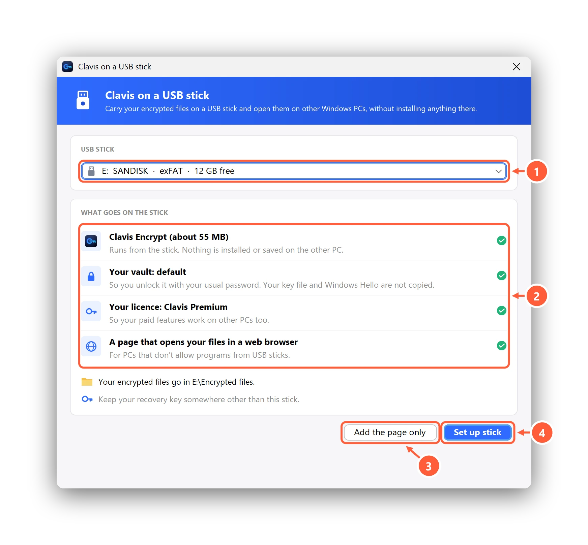
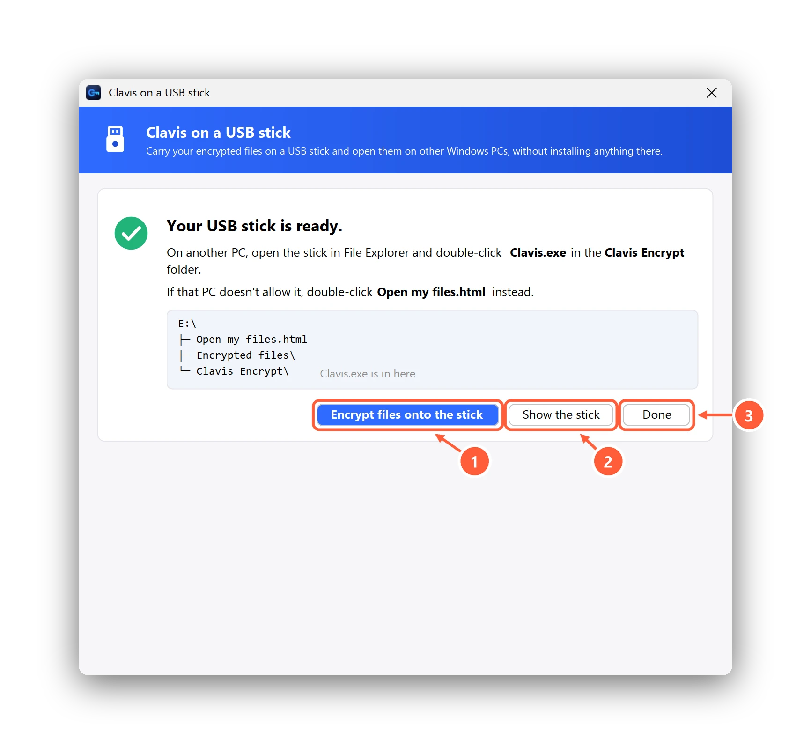

Carry your files on a USB stick
USB Stick in the sidebar gets a USB stick ready to carry your encrypted files. On another PC you open them with the copy of Clavis on the stick, or, where that PC doesn't allow programs from USB sticks, with a page that opens them in the web browser. Nothing is installed on the other PC, and Clavis keeps its vault, settings and working files on the stick.
Set up a stick
- Plug in the stick and open USB Stick. USB sticks, memory cards and portable USB drives (SSDs and hard disks) are listed; internal disks never are. If Windows has a connected drive switched off, Clavis tells you how to switch it on.
- Check What goes on the stick: Clavis Encrypt (about 55 MB), your vault (so your usual password unlocks it), your
licence on Pro and Premium, and the page
Open my files.html. - Press Set up stick (Clavis Pro). Clavis copies everything to a hidden folder first and moves it into place at the end, so Stop or an unplugged stick never leaves a half-working copy.
- When it's ready, Encrypt files onto the stick opens the stick's
Encrypted filesfolder: put your files there and encrypt them as usual.

- Choose the USB stick
- What goes on it: Clavis, your vault, your licence and a page that opens your files
- Only the browser page (free)
- Copy Clavis and your vault too (Pro)

- Opens the stick's Encrypted files folder
- Opens the stick in File Explorer
- Close the window
On Free, Add the page only puts just Open my files.html and an Encrypted files folder on the
stick. Each file then opens in the browser with its password. The Microsoft Store version offers the page only.
On another PC
- Open the stick in File Explorer and double-click Clavis.exe in the Clavis Encrypt folder. A USB stick mode badge shows at the top of the window.
- When you're done, press Finish and remove stick (the window's close button asks the same). Clavis locks your vault, removes its working files and closes; then unplug the stick.
- If Windows won't run it (Smart App Control, or a work PC that blocks programs on USB sticks), double-click Open my files.html on the stick instead. It works without internet and saves opened files to Downloads, or where you choose in Edge and Chrome. Delete them when you're done.
- Only open files on PCs you trust: a PC with malware can record your password. Programs such as Word may keep their own recent-files lists and backups on that PC, and Windows itself notes which programs ran and which USB sticks were plugged in.
Keep the stick up to date and safe
Open USB Stick on your own PC with the stick plugged in. Clavis compares every program file on the stick, and the page, with its own copy:
| What it says | What to do |
|---|---|
| Matches this PC's copy | Nothing. After changing your password, press Update vault on stick (Pro). |
| An older version | Update stick (Pro) copies this PC's version. Your vault on the stick isn't touched. |
| Some files have been changed | Don't run Clavis from that stick. Press Repair: it's free and replaces them with this PC's copy. |
| A newer version than this PC | Update Clavis on this PC first. |
On your own PC, open the stick's files with your installed Clavis, not the copy on the stick. If the stick was unplugged while Clavis was encrypting, the next start from the stick removes the unfinished file; the original was never changed.
Can I make a stick without Clavis Pro?
Yes. Unzip the portable ZIP from the download page into a folder named
Clavis Encrypt on the stick, and add an empty file named clavis-portable.txt next to Clavis.exe.
Clavis then runs in USB stick mode: it keeps its data in the Data folder beside it and adds nothing to the PC it runs on.
You create or restore a vault there yourself.
My files are bigger than 4 GB.
Sticks formatted as FAT32 can't hold files over 4 GB; Clavis tells you before it writes anything. Use exFAT instead (reformatting erases everything on the stick).
Can't find what you need? All help articles · Email us